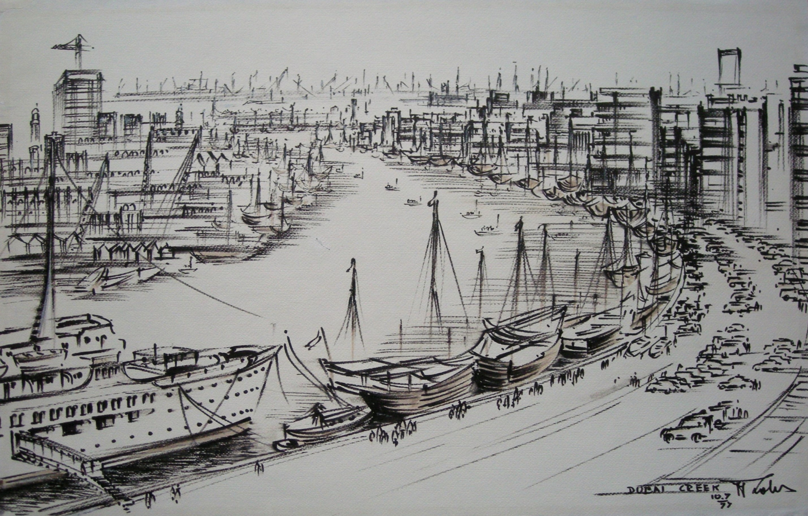

Jozef Zbigniew Polak
1923 – 2021
Artist Biography
Often known as J Z Polak, he fought as a soldier in the Home Army in the Warsaw Uprising before in 1945 studying architecture in Warsaw. One of Poland’s most successful modern architects under communism, Polak worked on numerous projects internationally including in the Democratic Republic of Congo, Israel, Libya, the United States and elsewhere. He had always been drawn towards art, particularly sketches both of his architectural plans and of existing historic sites he came across on his travels. Whilst working in Dubai, Polak had in 1977 a solo exhibition of his drawings of local scenes at the Hotel Intercontinental. He also exhibited in the United States. Polak’s artwork is held in the Vatican permanent collection.

Dubai Creek 10.7.77